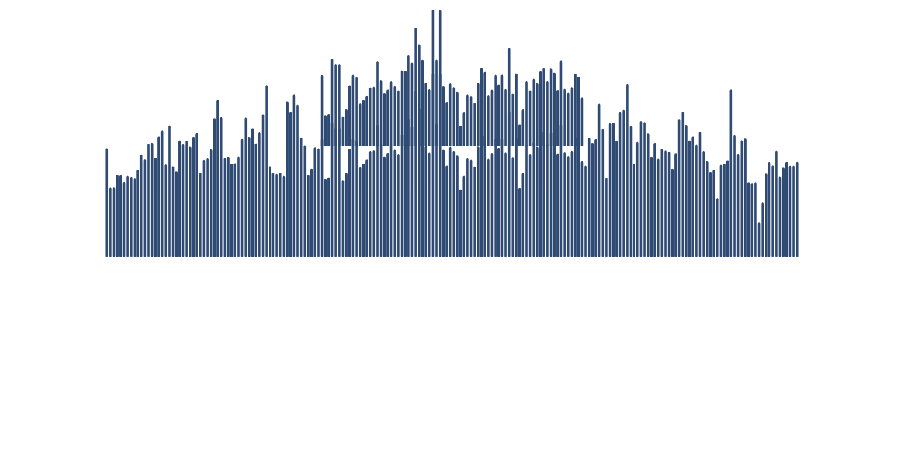

Oral Argument Podcast Feed

Photo: Joe Ravi, CC-BY-SA 3.0


I'm providing a podcast feed of the audio recordings of the oral arguments at the U.S. Supreme Court.
- Podcast adds new arguments automatically and immediately after they become available on supremecourt.gov
- Detailed episode descriptions with facts about the case from oyez.org and links to the case docket and other information.
- Convenient chapters to skip to any exchange between a justice and an advocate (available as soon as oyez.org publishes the transcript).
The podcast is available on Apple Podcasts and as an RSS feed. The source code that is used to generate the podcast feed is open source and available on GitHub.
Please consider rating the podcast so that more people can find it. Feel free to reach out to me with any feedback or suggestions: dominik-peters.de. I hope you enjoy the podcast!
Right: Screenshot of the podcast in Apple Podcasts, showing the available chapters. Do you need a way to add chapters to your podcast? Check out my open-source online mp3 chapter editor.